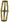

| |
Circuit |
Date |
Winner |
 |
Daytona |
31 January |
#11 - S.Pruett / P.Halsmer / P.Miller / B.Akin (Roush - Lincoln Mercury XR4Ti) |
 |
|
Sebring |
19 March |
#5 - W.Dallenbach Jr. / John Jones (Protofab - Chevrolet Corvette) |
 |
|
West Palm Beach |
24 April |
#6 - P.Halsmer (Roush - Lincoln Mercury XR4Ti) |
|
 |
Summit Point |
22 May |
#11 - S.Pruett (Roush - Lincoln Mercury XR4Ti) |
|
 |
Mid Ohio |
5 June |
#98 - C.Cord (All American Racers - Toyota Celica Turbo) |
 |
 |
Elkhart Lake |
17 July |
#98 - D.Aase (All American Racers - Toyota Celica Turbo) |
|
 |
Portland |
31 July |
#6 - P.Halsmer (Roush - Lincoln Mercury XR4Ti) |
|
 |
Sears Point |
14 August |
#99 - WT.Ribbs (All American Racers - Toyota Celica Turbo) |
|
 |
Lime Rock Park |
5 September |
#5 - W.Dallenbach Jr. (Protofab - Chevrolet Corvette) |
|
 |
Watkins Glen |
25 September |
#98 - C.Cord / D.Aase (All American Racers - Toyota Celica Turbo) |
|
|
Columbus |
2 October |
#16 - I.Hoerr (Oldsmobile - Oldsmobile Cutlass) |
 |
|
Del Mar |
23 October |
#99 - WT.Ribbs (All American Racers - Toyota Celica Turbo) |
|